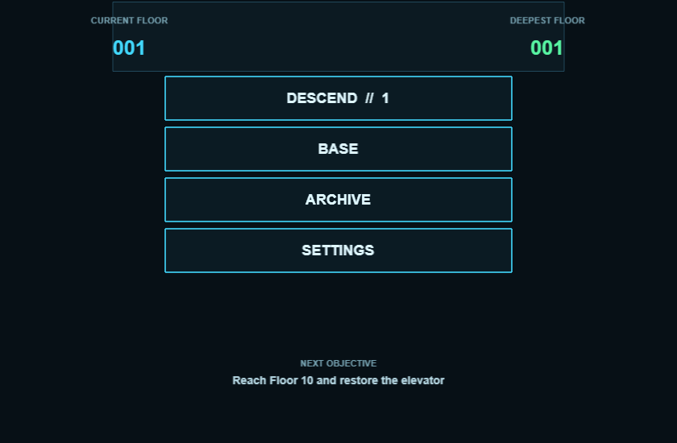

BROWSER GAME
Below Protocol
A story-driven sci-fi match-3 campaign with tactical encounters, progression and persistent saves.

About this project
This is an independent demonstration project prepared to show interface, interaction and implementation decisions. It is presented honestly as portfolio work.
Implemented features
- TypeScript, Phaser and Vite
- Campaign, bosses and nine endings
- 79 automated tests